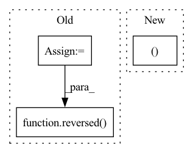

Pattern ID :21669
Before Change
states, actions, rewards, next_states, done_masks, old_log_probs = convert_to_tensor(data["state"], data["action"], data["reward"], data["next_state"], data["done"], data["log_prob"])
old_values = self.v(states).detach()
td_target = rewards + self.gamma * self.v(next_states) * done_masks
delta = td_target - old_values
delta = delta.detach().cpu().numpy()
advantage_lst = []
advantage = 0.0
for idx in reversed( range(len(delta))) :
if done_masks[idx] == 0:
advantage = 0.0
advantage = self.gamma * self.lmbda * advantage + delta[idx][0]After Change
data = self.data.sample(shuffle = False)
states, actions, rewards, next_states, done_masks, old_log_probs = convert_to_tensor(data["state"], data["action"], data["reward"], data["next_state"], data["done"], data["log_prob"])
old_values, advantages = self.get_gae(states, rewards, next_states, done_masks)
returns = advantages + old_values
advantages = (advantages - advantages.mean())/(advantages.std()+1e-3)
In pattern: SUPERPATTERN
Frequency: 3
Non-data size: 3
Instances Fragment ID: 69186334
Project Name: seolhokim/mujoco-pytorch
Commit Name: 8e6d6eb006141b9bcc102173cfb202dcfaf9e17e
Time: 2021-05-09
Author: kilmya1@naver.com
File Name: agent.py
M Class Name: PPO
N Class Name: PPO
M Method Name: train_net(3)
N Method Name: train_net(3)
M Parent Class: nn.Module
N Parent Class: nn.Module
M File Name: agent.py
N File Name: agent.py
M Start Line: 44
M End Line: 56
N Start Line: 60
N End Line: 60
Before Change
padding = [0] * (2 * len(tensor.shape))
padding[dim * 2 + 1] = math.ceil((kernel_size_int - 1) / 2)
padding[dim * 2] = math.ceil((kernel_size_int - 1) / 2)
padding = tuple(reversed( padding) )
if padding_mode == "replicate":
// replication padding has some strange constraints...After Change
grid = torch.arange(kernel_size, device=tensor.device) - mean
kernel_shape = (1, 1, kernel_size )
grid = grid.view(kernel_shape)
grid = grid.detach() Fragment ID: 69186330
Project Name: matthias-k/deepgaze
Commit Name: a2f6037f9ae20086ff19775583ed036167449172
Time: 2022-06-20
Author: matthias.kuemmerer@bethgelab.org
File Name: deepgaze_pytorch/layers.py
M Class Name: AnonimousClass
N Class Name: AnonimousClass
M Method Name: gaussian_filter_1d(7)
N Method Name: gaussian_filter_1d(7)
M Parent Class:
N Parent Class:
M File Name: deepgaze_pytorch/layers.py
N File Name: deepgaze_pytorch/layers.py
M Start Line: 130
M End Line: 160
N Start Line: 128
N End Line: 164
Before Change
return latest_log_id, changes
resp = logs_query(args.tail).send()
logs = resp.trial_logs
// Due to limitations of the GraphQL API, which mimics SQL, requesting a tail means we have to
// get the results in descending ID order and reverse them afterward.
if args.tail is not None:
logs = reversed( logs)
latest_log_id, _ = process_response(logs, -1)
// "Follow" mode is implemented as a loop in the CLI. We assume that
// newer log messages have a numerically larger ID than older logAfter Change
@authentication_required
def logs(args: Namespace) -> None:
offset, state = 0, None
def print_logs(limit: Optional[int] = None) -> None:
nonlocal offset, state
path = "trials/{}/logsv2?offset={}".format(args.trial_id, offset) Fragment ID: 69186342
Project Name: determined-ai/determined
Commit Name: 3da2ccbfa9a48a61c87488858d89fe84f1997978
Time: 2020-04-30
Author: yoni@determined.ai
File Name: cli/determined_cli/trial.py
M Class Name: AnonimousClass
N Class Name: AnonimousClass
M Method Name: logs(1)
N Method Name: logs(1)
M Parent Class:
N Parent Class:
M File Name: cli/determined_cli/trial.py
N File Name: cli/determined_cli/trial.py
M Start Line: 128
M End Line: 168
N Start Line: 99
N End Line: 131